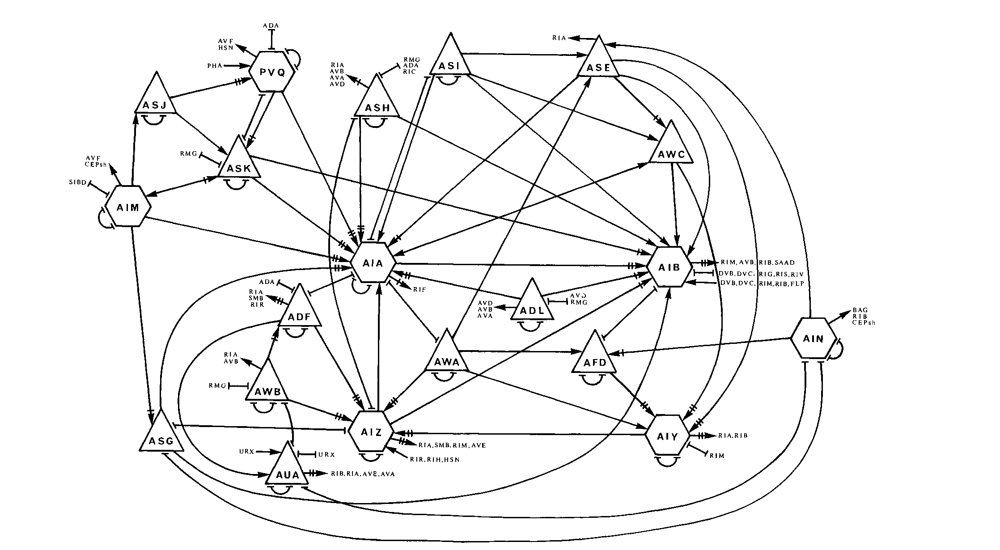
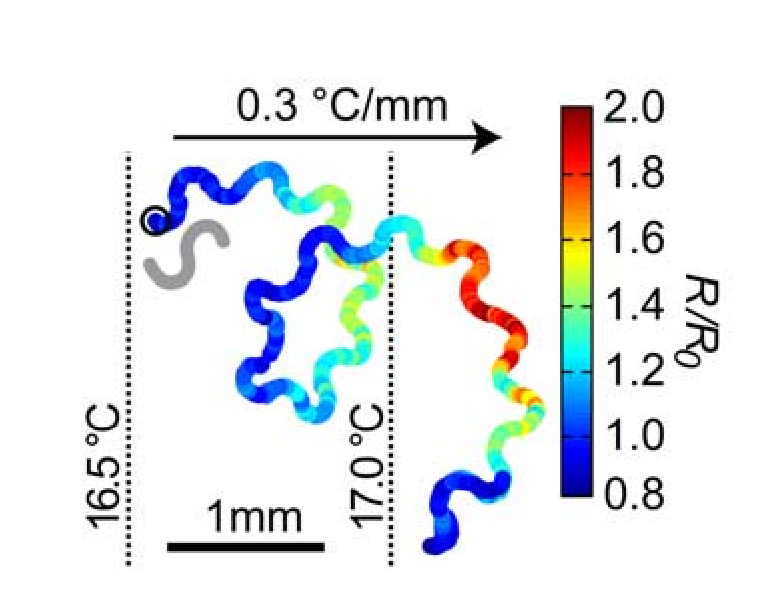

https://bit.ly/StanfordADTS2023
Brain and behavior
Aravi Samuel

Howard Berg (1934-2021)
E. coli
Tracking cells
If life is getting better, enjoy it more.
If life is getting worse, don't worry about it.
Circuits from input to output

C. elegans
Circuits from input to output
White et al. (1986)
Neurons encode (parts of) behaviors
Clark et al. (2007)

“Science is a bit like the joke about the drunk who is looking under a lamppost for a key that he has lost on the other side of the street, because that’s where the light is.”
- Noam Chomsky
Whole-brain imaging
Ahrens et al. (2013)
Mei, Vivek, and Vlad

Tracking brains
Low-dimensional behavior → Low-dimensional brain

Venkatachalam et al. (2016)
Natural behavior is high-dimensional
Every mating is the same
Every mating is different
Courtship and mating
Two male brains

Anterior $\sim$ 200 neurons Posterior $\sim$ 100 neurons
Circuits from input to output
Jarrel et al. (2012)

GCaMP6 Neptune mCherry
Susoy et al. (2021)
Measuring brain and behavior

Every mating is the same
Every mating is different
Natural behavior is high-dimensional


Most neurons contribute
to multiple sub-behaviors
A different combinatorial activity pattern
for every sub-behavior
Different sub-behaviors,
different muscles,
same neurons

Context-dependent sensory perception
diversifies brain activity
PVV activity as the worm turns
PVV ablation
Training linear models
to predict behavior from activity
Trained linear models
predict behavior from activity

Diverse brain-wide activity patterns
emerge from diverse sensory contexts

Connectome (by itself)
poorly predicts function
Worm connectomics
Daniel, Jeff, Mei, and many others

A baby brain
Witvliet et al. (2021)
Brains get bigger
Topology stays the same

Witvliet et al. (2021)
More synapses, more connections

Stable, developmentally dynamics,
and variable connectivity

Hard-wired central processor,
( learned? ) plasticity everywhere else

Mating in swimming worms
Susoy et al. (unpublished)
Spiral behavior

Parallel mating in Flatland,
Spiral mating in Spaceland
Mating in swimming worms
Critical period during L4 stage
Scanning Electron Microscopes
1 cubic millimeter
↓
4 nm × 4 nm × 30 nm per voxel
↓
2,000,000,000,000,000 pixels

1 µs / pixel
↓
60 years

61 beams
↓
1 year
Fast, inexpensive SEM
Yaron Meirovitch
Harvard
Jeff Lichtman
Harvard
Nir Shavit
MIT

Remco Schoenmakers
Pavel Potocek
Maurice Peemen
Core Park, Harvard
Lu Mi, Harvard
Richard Schalek, Harvard
Important information is sparse

Berghia stephanieae
10% of pixels are membranes
Important information is sparse

Negligible overhead
to dwell on important pixels
Segmentation of high-speed images (0.1 µs/pixel)


Segmentation of low-speed images (3 µs/pixel)


Segmentation error in high-speed imaging
Segmentation using
low-speed image
Segmentation using
high-speed image

Difference
Smart microscopy

Rescan
Embed in initial scan

Reconstructed image
Smart electron microscopy
Low speed
(3 µs × 100%)

Slow microscope
running slow
(1×)
Results of learning-guided electron microscopy
Low speed
(3 µs × 100%)
Slow microscope
running slow
(1×)
High-speed 30×
(0.1 µs × 100%)

Slow microscope
running fast
(30×)
Results of learning-guided electron microscopy
Low speed
(3 µs × 100%)
Slow microscope
running slow
(1×)
High-speed 30×
(0.1 µs × 100%)
Slow microscope
running fast
(30×)
Reconstructed 10×
(0.1 µs×100% + 3 µs×10%)

Learning-guided microscope
running fast
(10×)
Results of learning-guided electron microscopy
Low speed
(3 µs × 100%)
Slow microscope
running slow
(1×)
High-speed 30×
(0.1 µs × 100%)
Slow microscope
running fast
(30×)
Reconstructed 10×
(0.1 µs×100% + 3 µs×10%)
Learning-guided microscope
running fast
(10×)
High-speed 10×
(0.3 µs × 100%)


Slow microscope
running fast
(10×)
Fast analysis for whole-brain imaging
Core, Vlad, and Sahand

All-manual analysis is slow
Augmenting training data for machine learning

Augmenting training data for machine learning

Motivation

"Is any of this knowledge practical? The reading of the external environment by cells of all types, leading to responses in growth or motility, is fundamental to life. Bacterial chemotaxis provides a model for learning how such processes can work. However this is not what has motivated me. I have wanted to know, simply, how such a tiny creature does its thing. How, for example, has it solved the problem of finding greener pastures within the constraints imposed by physics? This is a matter of curiosity. Curiosity is the driving force of basic science."
-Howard Berg
Acknowledments
Samuel Lab
Vlad Susoy
Core Park
David Zimmerman
Helena Casademunt
Stan Lazopulo
Alina Vrabiou
Gabriel Hosu
Zhen Lab
Dr. Daniel Witvliet
Dr. Ben Mulcahy
Min Wu
Dr. Wesley Hung
Lichtman Lab
Dr. Richard Schalek
Dr. Yaron Meirovitch
Dr. Yuelong Wu
Dr. Daniel Berger
Shavit Lab
Dr. Lu Mi
Dr. Yaron Meirovitch
Alumni
Prof. Damon Clark, Yale
Prof. Andrew Leifer, Princeton
Prof. Vivek Venkatachalam,
Northeastern Univ
Prof. Sahand Jamal, EPFL
Prof. Quan Wen, USTC
Prof. Guangwei Si, Beijing
Prof. Ni Ji, Beijing
Dr. Albert Lin, Princeton
Dr. James Mitchell, Harvard